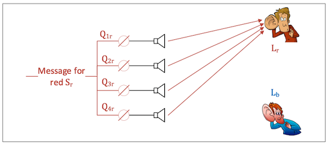

思科 Catalyst Wi-Fi 6 MU-MIMO 带你畅享速度与激情
思科的技术博客网站设立了Wi-Fi 6专题页，讲解Wi-Fi 6技术要点及思科相应产品功能。近期的一篇由思科高级无线工程师史瑞亚斯·特里维迪和octoScope公司首席科学家史蒂夫·希勒合作的博文，结合测试实例介绍OFDMA与MU-MIMO技术相结合，在多用户环境下达到两倍多总吞吐量的能力。文章简洁明了，可以让读者快速领悟Wi-Fi 6的关键技术革新，特此翻译为中文，分享给感兴趣的朋友。
贡献者 – Ming Chong 和 Santa Chowdhury (octoScope公司)
我们特别感谢 Nilesh Doshi（高级无线AP经理）的指导。
由于前导码和其它机制产生的附加开销趋向于占主导地位，使用非Wi-Fi 6为许多传输小数据包的客户端提供服务是低效的。OFDMA1是这种情况下的理想解决方案，因为它将信道划分以同时服务多达37个用户（对应于80MHz带宽），开销也得到均摊。OFDMA提高了系统效率，但不一定能提高吞吐量。
MU-MIMO（多用户、多输入、多输出）在发送器和小数量接收器中的每一个之间创建空间分离的独立信道，这样每个接收器只会收听到针对自己的信息，而非针对其它接收器的信息. 这意味着发送器可以通过叠加方式同时向几个接收器发送数据，从而提高总吞吐量，而增加的比例取决于接收器的数量。
思科Catalyst 9800系列无线局域网控制器即将发布的IOS XE 17.6.1版本（当前处于Beta测试阶段）引入了新潮的接入点调度器设计，可同时高效地为多个客户端提供服务。系统激活此功能时生成最低水平的探测开销，由此即使在密集的用户环境中，也能收益接近物理层速率的数据速率。目前这些新特性在Catalyst 9130和Catalyst 9124系列接入点上得到支持。以下让我们先了解MU-MIMO的概念，然后评估其性能。
波束成形和MU-MIMO
应用相控天线阵列的无线电波束成形技术已为人所知数十年。最近，这些技术理论已用于设计MU-MIMO，其中就包含了使用多个同时波束为每个用户提供独立信道的思想。
类似的原理适用于音频领域，可以对扬声器定相以将声音引导到特定位置。想法是调整每个扬声器的相位，使声音在收听者所在的点构造性地增加，而在所有其它位置则解构性消减。
考虑一个声源\(Sr\)通过四个扬声器的阵列播放，每个扬声器的声音各自由相量\(Q_{1r}\sim Q_{4r}\)调整，以使红色收听者的信号强度\(L_r\)最大化，并且在蓝色收听者处\(L_b\)被最小化。

相似地，我们选择一组相量\(Q_{1b}\sim Q_{4b}\)最大化蓝色收听者处的信号，同时最小化红色收听者处的信号。
使用叠加，我们可以对每条消息施加适当的相位调整，并在信号进入扬声器之前聚合。通过这种方式，我们可以同时发送两条不同的消息，但每个听众只会听到针对他们的消息。
请注意空间分离的重要性—\(L_b\)和\(L_r\)听到他们各自的消息，因为相量经过优化以将每种声音传送到它们的特定位置。如果其中一位收听者离开他的位置，他将不再能收听到他的信息。
如果第三个人进入图中的场景并站在靠近扬声器的位置，他将同时听到两条消息的乱声。
对应于Wi-Fi环境中，扬声器被天线取代，相量控制由信号处理实现，数字消息以特定数据速率生成，这一切都在AP中完成。由于两个消息可以同时传输，理论上可以使聚合数据速率加倍。同样的方法可以用来同时服务更多的客户端，那么上限在哪里呢？实际上，可设置相量的精度存在限制，还有导致“串扰”的反射和其它限制都制约了可获得的吞吐量增益。
空间位置的重要性决定了MU-MIMO环境中的嗅探更加复杂。请注意，将嗅探器靠近AP将得到我们之前提到的乱码效果。嗅探探头必须放置在靠近被嗅探设备的物理位置，通常每个设备都需要一个嗅探探头。
系统概述和测试基础设施
在这个MU-MIMO测试中，我们使用了octoScope（现在已并入思博伦2）STACK-MAX 测试台。在基础设施方面，使用运行IOS-XE 17.6.1（Beta测试版代码）的Catalyst 9800无线局域网控制器和Catalyst 9130接入点。C9130 AP支持最多8×8上行链路和下行链路MU-MIMO，以及8个空间流。Pal-6E支持Wi-Fi 6，最多可仿真256个站点或充当嗅探器探头。

STApal是基于Intel AX210芯片组的具有完整功能STA3，运行在自己的硬件平台上。所有测试室都与外界完全隔离，它们之间的信号路径由全屏蔽衰减器控制，因此可以进行可靠且可重复的测量。腔室内衬射频（RF）吸收泡沫，以显著减少内部反射并防止驻波。
对于此MU-MIMO测试，我们使用多达4个STA。RF路径将来自C9130 AP的信号连接到各个STA。我们在LOS或IEEE通道模型A模式下使用多路径仿真器 (MPE)。每对天线都馈入一组四个客户端，如下图所示。我们已经看到空间分离是MU-MIMO操作成功的必要条件。通过将天线放置在消声测试室的角落，实现了最佳空间分离。这允许四个独立的MU-MIMO流发送到四组、每组四个的STA。

实际测试
为了演示MU-MIMO增益效果，我们将C9130 AP放置在腔室的中心，并传输下行链路UDP数据到连接到角落天线上的STA。
首先，我们关闭MU-MIMO并且只开启一个STA。我们注意到吞吐量仅略高于1000 Mbps，略低于1200 Mbps的物理层速率。20秒后，我们引入了另一个STA，看到总吞吐量保持在1000 Mbps，但两个STA共享信道，每个STA达到了500 Mbps。20秒后，我们引入了第三个STA。同样，总吞吐量保持为1000 MBps，三个STA共享信道，每个STA的速度略高于300 Mbps。第四个STA的引入遵循相同的模式，聚合保持不变，每个STA得到250 Mbps。

我们重复了这个实验，这次开启了MU-MIMO。
从一个STA开始，我们实现了熟悉的1000 Mbps。20秒后，我们引入了第二个STA，并观察到聚合速率已增加到2000 Mbps，这明显高于物理层速率。我们还注意到，每个STA的接收速度仍接近之前的1000 Mbps。与之前的STA共享信道的实验不同，在本实验中，它们每个都能够相互独立地充分利用自己的信道。

添加第三个STA将聚合速度增加到2200 Mbps。三个STA中的每一个仍接收730 Mbps。添加第四个STA导致总吞吐量2100 Mbps的，每个STA接收525 Mbps，比单用户操作增加了两倍。
下图总结了测试结果：

结论
MU-MIMO利用接收器的空间分离引导独立的消息同时发送到每个接收器。这样可以更有效地使用介质，并提升网络可以实现的聚合数据率。Catalyst 9130 AP的开创性调度程序设计，在多用户传输场景中提供了卓越的吞吐量增益。这是更高MCS速率、低探测开销和高效动态分组调度的结果。
WLAN上默认启用DL和UL MU-MIMO以及OFDMA。这些功能在现有版本的9800系列无线控制器上可用，但上述增强功能将从 17.6.1版本开始提供。